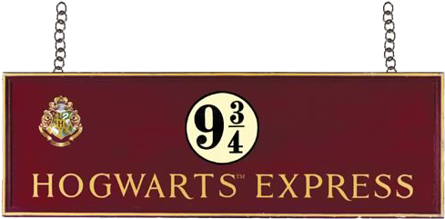
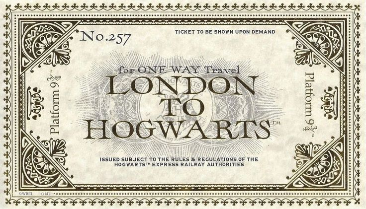
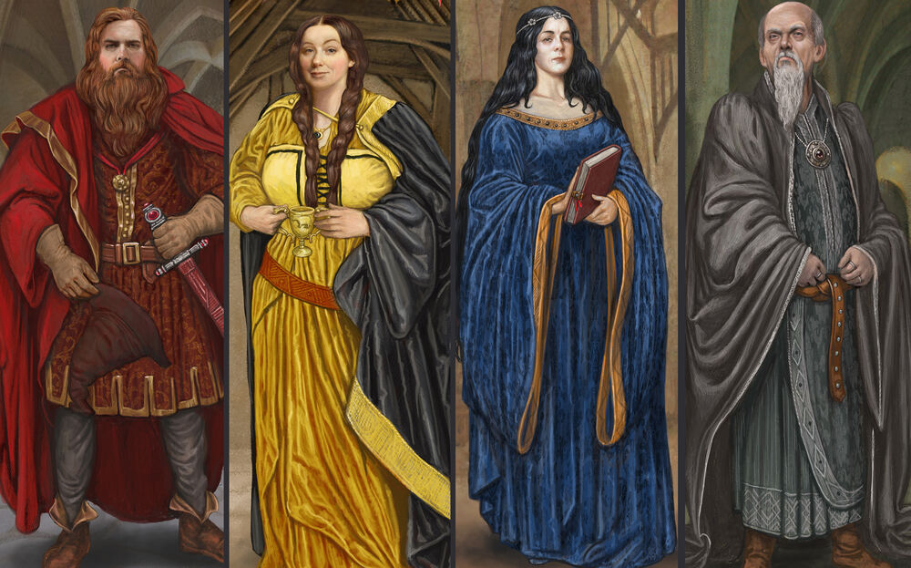
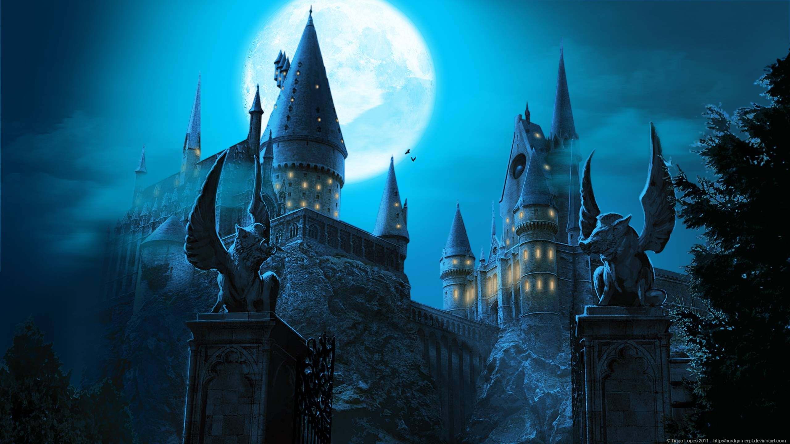
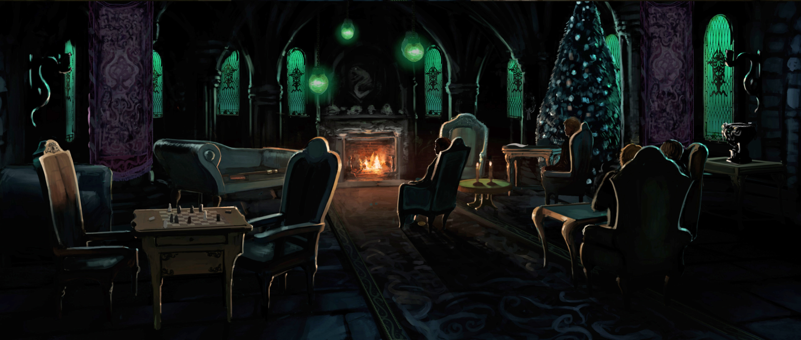
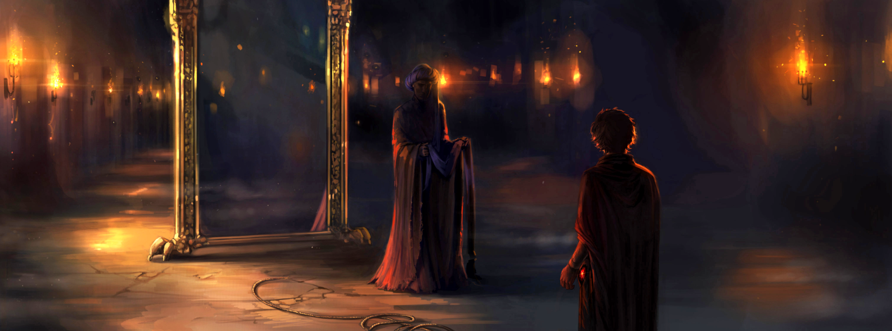
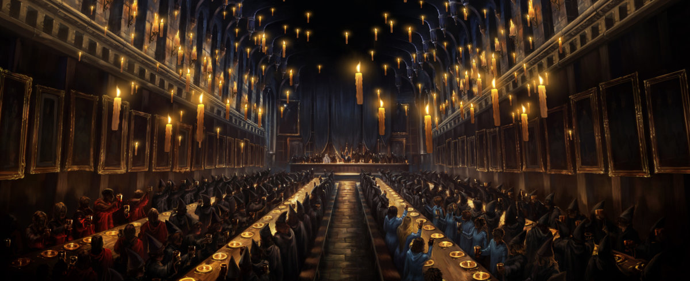

𝔓𝔩𝔞𝔱𝔣𝔬𝔯𝔪 𝔑𝔦𝔫𝔢 𝔞𝔫𝔡 𝔗𝔥𝔯𝔢𝔢-𝔔𝔲𝔞𝔯𝔱𝔢𝔯𝔰 (𝔓𝔩𝔞𝔱𝔣𝔬𝔯𝔪 9¾) 𝔴𝔞𝔰 𝔞 𝔭𝔩𝔞𝔱𝔣𝔬𝔯𝔪 𝔞𝔱 𝔎𝔦𝔫𝔤'𝔰 ℭ𝔯𝔬𝔰𝔰 𝔖𝔱𝔞𝔱𝔦𝔬𝔫 𝔦𝔫 𝔏𝔬𝔫𝔡𝔬𝔫. 𝔐𝔞𝔤𝔦𝔠𝔞𝔩𝔩𝔶 𝔠𝔬𝔫𝔠𝔢𝔞𝔩𝔢𝔡 𝔟𝔢𝔥𝔦𝔫𝔡 𝔱𝔥𝔢
𝔟𝔞𝔯𝔯𝔦𝔢𝔯 𝔟𝔢𝔱𝔴𝔢𝔢𝔫 𝔐𝔲𝔤𝔤𝔩𝔢 𝔓𝔩𝔞𝔱𝔣𝔬𝔯𝔪𝔰 𝔑𝔦𝔫𝔢 𝔞𝔫𝔡 𝔗𝔢𝔫, 𝔱𝔥𝔦𝔰 𝔓𝔩𝔞𝔱𝔣𝔬𝔯𝔪 𝔴𝔞𝔰 𝔴𝔥𝔢𝔯𝔢 ℌ𝔬𝔤𝔴𝔞𝔯𝔱𝔰 𝔖𝔠𝔥𝔬𝔬𝔩 𝔬𝔣 𝔚𝔦𝔱𝔠𝔥𝔠𝔯𝔞𝔣𝔱 𝔞𝔫𝔡 𝔚𝔦𝔷𝔞𝔯𝔡𝔯𝔶 𝔰𝔱𝔲𝔡𝔢𝔫𝔱𝔰
𝔟𝔬𝔞𝔯𝔡𝔢𝔡 𝔱𝔥𝔢 ℌ𝔬𝔤𝔴𝔞𝔯𝔱𝔰 𝔈𝔵𝔭𝔯𝔢𝔰𝔰 𝔢𝔳𝔢𝔯𝔶 1 𝔖𝔢𝔭𝔱𝔢𝔪𝔟𝔢𝔯, 𝔦𝔫 𝔬𝔯𝔡𝔢𝔯 𝔱𝔬 𝔞𝔱𝔱𝔢𝔫𝔡 𝔰𝔠𝔥𝔬𝔬𝔩.
ℑ𝔫 𝔬𝔯𝔡𝔢𝔯 𝔣𝔬𝔯 𝔰𝔬𝔪𝔢𝔬𝔫𝔢 𝔱𝔬 𝔤𝔢𝔱 𝔬𝔫𝔱𝔬 𝔓𝔩𝔞𝔱𝔣𝔬𝔯𝔪 𝔑𝔦𝔫𝔢 𝔞𝔫𝔡 𝔗𝔥𝔯𝔢𝔢-𝔔𝔲𝔞𝔯𝔱𝔢𝔯𝔰, 𝔱𝔥𝔢𝔶 𝔥𝔞𝔡 𝔱𝔬 𝔴𝔞𝔩𝔨 𝔡𝔦𝔯𝔢𝔠𝔱𝔩𝔶 𝔞𝔱 𝔱𝔥𝔢 𝔞𝔭𝔭𝔞𝔯𝔢𝔫𝔱𝔩𝔶 𝔰𝔬𝔩𝔦𝔡 𝔟𝔞𝔯𝔯𝔦𝔢𝔯
𝔡𝔦𝔳𝔦𝔡𝔦𝔫𝔤 𝔓𝔩𝔞𝔱𝔣𝔬𝔯𝔪𝔰 𝔑𝔦𝔫𝔢 𝔞𝔫𝔡 𝔗𝔢𝔫. 𝔚𝔥𝔢𝔫 𝔯𝔢𝔱𝔲𝔯𝔫𝔦𝔫𝔤 𝔣𝔯𝔬𝔪 𝔓𝔩𝔞𝔱𝔣𝔬𝔯𝔪 𝔑𝔦𝔫𝔢 𝔞𝔫𝔡 𝔗𝔥𝔯𝔢𝔢-𝔔𝔲𝔞𝔯𝔱𝔢𝔯𝔰, 𝔱𝔥𝔢𝔯𝔢 𝔴𝔞𝔰 𝔞 𝔤𝔲𝔞𝔯𝔡 𝔰𝔱𝔞𝔱𝔦𝔬𝔫𝔢𝔡 𝔧𝔲𝔰𝔱 𝔬𝔲𝔱𝔰𝔦𝔡𝔢
𝔱𝔥𝔢 𝔱𝔦𝔠𝔨𝔢𝔱 𝔟𝔞𝔯𝔯𝔦𝔢𝔯, 𝔦𝔫 𝔬𝔯𝔡𝔢𝔯 𝔱𝔬 𝔯𝔢𝔤𝔲𝔩𝔞𝔱𝔢 𝔢𝔵𝔦𝔱𝔰 𝔣𝔯𝔬𝔪 𝔱𝔥𝔢 𝔭𝔩𝔞𝔱𝔣𝔬𝔯𝔪 𝔱𝔥𝔯𝔬𝔲𝔤𝔥 𝔱𝔥𝔢 𝔤𝔞𝔱𝔢, 𝔦𝔫 𝔬𝔯𝔡𝔢𝔯 𝔱𝔬 𝔫𝔬𝔱 𝔞𝔩𝔞𝔯𝔪 𝔱𝔥𝔢 𝔐𝔲𝔤𝔤𝔩𝔢𝔰.

Over the scarlet steam train's billowing smoke, there was a sign announcing that the Hogwarts Express would depart at eleven o’clock. The platform also had a distinct smell — one which lifted the spirits of young wizards who, like Harry
Potter, look forward each summer to the start of term.
Though the platform was normally only used six days a year (round trips for the beginning and end of term, as well as the Christmas and Easter holidays), the platform on those days was awash with activity. Steam from the scarlet engine
flooded the platform as cats wound their way around the wizards’ legs and owls hooted to each other, as hoardes of students and parents moved around through the steam “like dark ghosts”, their voices carrying through the mist.
Finally, at 11:00, a whistle sounded announcing the train’s departure., and the hiss of the pistons filled the platform as the train began to move, creaking out of the station as family members stood on the platform and waved their
children off to school. Nobody returned to the platform, then, for months — until the end of term, when it once again filled with wizards and a wizened old guard sat by the archway back to the Muggle world, making sure everyone got home
without attracting too much attention.
|

|
-
Founded in the 10th century by Godric Gryffindor, Rowena Ravenclaw, Helga Hufflepuff and Salazar Slytherin, Hogwarts was established in the Highlands of Scotland to educate young wizards and witches as well as to keep students
safe from muggle prosecution. Theory has it that Rowena Ravenclaw came up with the name of Hogwarts after dreaming of a warty hog that led her to a cliff by a lake.Since then,
Hogwarts educated most wizarding children in the United Kingdom and its surrounding areas,keeping its location hidden from other wizarding schools and muggles.
|
" The castle is a stronghold of ancient magic. "
— Albus Dumbledore regarding the ancient castle
-
The castle was the main building of Hogwarts School of Witchcraft and Wizardry, regarded as the finest wizarding school in the world.
-
Hogwarts Castle was a large, seven-storey high building supported by magic, with a hundred and forty two staircases throughout its many towers and turrets and very deep dungeons.
-
Hogwarts Castle was a large, seven-storey high building supported by magic, with a hundred and forty two staircases throughout its many towers and turrets and very deep dungeons.The deep Forbidden Forest extended around to the
west of the castle.Hogwarts was built in a valley area — surrounding mountains were part of the landscape — with the fairly large Great Lake to the south of the main building.
|

|

|
-
Hogwarts was protected by numerous ancient spells, such as the Anti-Disapparition Jinx; this could, however, be overridden by the Headmaster (and Dumbledore's phoenix, Fawkes) when necessary. It was also unplottable and
bewitched so that, if Muggles approached the castle, all they would see would be a mouldering ruin with a sign warning them to keep out and that it was unsafe. The protective magic over Hogwarts was not only strong enough to
apparently resist the dispelling effects of the Taboo, but also to repel even talented Dark Wizards.
-
Hogwarts Castle was a large, seven-storey high building supported by magic, with a hundred and forty two staircases throughout its many towers and turrets and very deep dungeons.
-
It was the setting of the final battle of the Second Wizarding War, the Battle of Hogwarts, which resulted in the deaths of several witches and wizards who fought in defence of the castle, including Remus Lupin, Nymphadora Tonks,
Fred
Weasley, Colin Creevey, Lavender Brown, and Severus Snape. The castle was badly damaged in the battle, but ultimately the Order of the Phoenix won when Harry Potter defeated his nemesis, Lord Voldemort, in the Great Hall.
|
-
Chamber Of Secrets :
The Chamber of Secrets was allegedly created deep under the dungeons of Hogwarts Castle during the Medieval times by Salazar Slytherin, who disagreed with the other Hogwarts founders on
the merits of
blood purity. The Chamber of Secrets was home to an ancient Basilisk, which was intended to be used to purge the school of Muggle-born students. The entrance could be found in Moaning Myrtle's bathroom on the second floor. In
order to gain entrance one had to say "open" in Parseltongue, and a sink would open into a slide. While falling down the large, dark pipe, one could see hundreds of other pipes leading off. At the end of the pipe, one was launched
into a damp, stone chamber. This room was stated to be "miles beneath the school" and under the Lake. This was where Tom Marvolo Riddle used his ability to speak Parseltongue and attack Harry Potter.
|

|
|

|
-
Slytherin Dungeon : The Slytherin Dungeon was located behind a wall in the dungeons of Hogwarts. A Password spoken to the wall was required to enter it; whereupon a passage was revealed leading to the Common room—a
low-ceilinged, dungeon-like room with greenish lamps and chairs. This dungeon extended partway under the lake. Off of this room also included the Slytherin Boys' Dormitory.
|
-
Philosopher's Stone chambers : These chambers were a series of rooms underneath Hogwarts School of Witchcraft and Wizardry that served as the defences surrounding the Philosopher's Stone.The Philosopher's Stone became
the target of Lord Voldemort due to its potent ability to return him to full power. Suspecting danger, Albus Dumbledore set out Rubeus Hagrid to retrieve the Stone from Vault 713 at Gringotts Wizarding Bank the same day he
took Harry Potter to Diagon Alley. That same day, Quirinus Quirrell, who was being used as the parasitic host of Lord Voldemort, broke into the bank, but failed to obtain the Stone.
Thereafter, Hagrid brought the Stone to Hogwarts as requested, and Professors Pomona Sprout, Filius Flitwick, Minerva McGonagall, Quirinus Quirrell and Severus Snape, as well as Hagrid and Dumbledore themselves, each created
their own separate chamber.
|

|
|

|
-
Great Hall : The Great Hall in Hogwarts was the main gathering area in the school. Students ate their meals, received daily owl posts, and had certain special events. The Great Hall was a large hall that could
easily hold all of the school's students, staff and guests. It had tall walls that reached up to the ceiling, which was enchanted to look like the sky above. It was the scene of Harry Potter and Lord Voldemort's final
showdown, which was the Dark Lord's ultimate defeat. This was because the Elder Wand refuse to kill its true master, so Harry was not killed. Since Voldemort was now a mortal man, the curse rebounded on him, killing Tom
Marvolo Riddle once and for all.
|